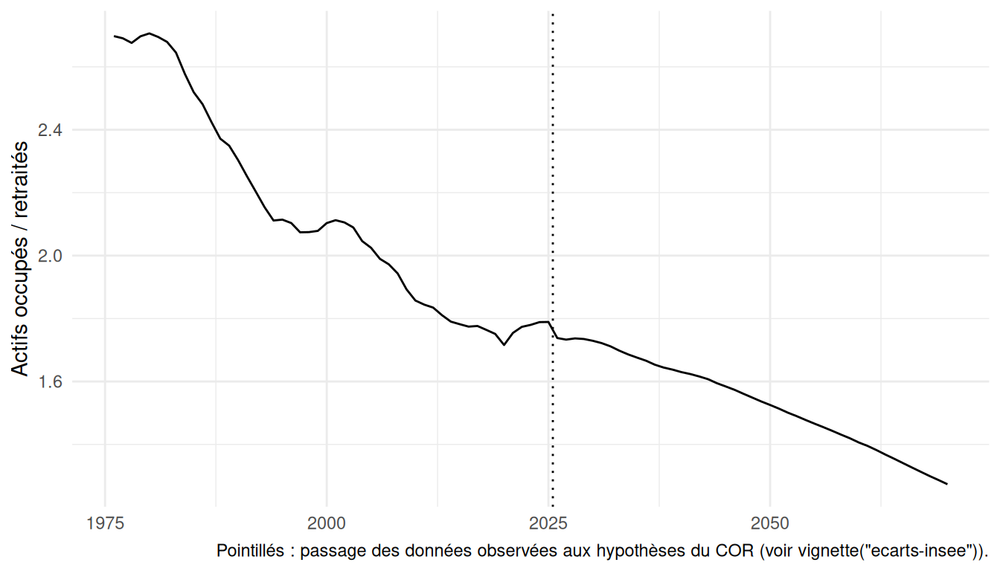
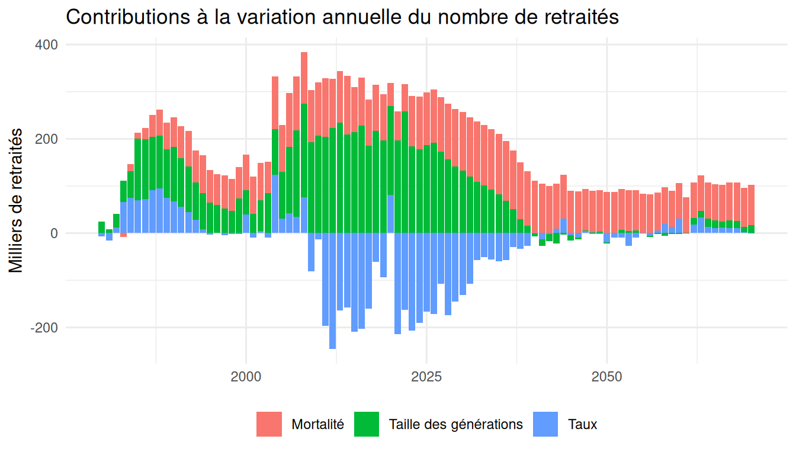

Cette vignette montre comment obtenir la base démographique du package (population, retraités, actifs et actifs occupés par sexe, année et âge), d’abord en une ligne, puis étape par étape, et comment construire des variantes. Elle se termine par quelques exploitations simples.
La base complète en une ligne
base <- construire_base()Avec les valeurs par défaut, construire_base() utilise les tables du scénario central embarquées dans le package et fonctionne hors ligne :
- population : scénario central des projections de l’Insee (millésime 2026), prolongé jusqu’en 2180 avec les quotients de mortalité de 2125 reconduits, précédé de la série historique depuis 1901 ;
- effectifs corrigés des ruptures de champ géographique (France entière) ;
- taux de retraités du COR (rapport de 2025), complétés avant 2000 par les taux rétrospectifs construits à partir des EIR ;
- taux d’activité et d’emploi de l’enquête Emploi, puis du COR avec une hypothèse de chômage de long terme de 7 %, lissés par âge fin.
La base compte une ligne par sexe, année et âge (de 0 à 120 ans) :
base |>
filter(sexe == "F", annee == 2030, age3112 %in% 60:64) |>
select(sexe, generation, annee, age3112, population3112,
tx_retraites, nb_retraites, tx_emploi, nb_actifs_occupes)
#> # A tibble: 5 × 9
#> sexe generation annee age3112 population3112 tx_retraites nb_retraites
#> <chr> <dbl> <dbl> <dbl> <dbl> <dbl> <dbl>
#> 1 F 1970 2030 60 455021 0.0297 13510.
#> 2 F 1969 2030 61 446238 0.0245 10922.
#> 3 F 1968 2030 62 441670 0.241 106624.
#> 4 F 1967 2030 63 438832 0.330 144769.
#> 5 F 1966 2030 64 447341 0.625 279707.
#> # ℹ 2 more variables: tx_emploi <dbl>, nb_actifs_occupes <dbl>Les principales colonnes sont :
| Colonne | Contenu |
|---|---|
generation, annee, age3112
|
génération, année, âge atteint dans l’année |
population, population3112
|
population au 1er janvier, au 31 décembre |
deces, qx, solde_migratoire, naissances
|
composantes démographiques |
tx_retraites, nb_retraites
|
taux et nombre de retraités au 31 décembre |
tx_nouveaux_retraites, nb_nouveaux_retraites
|
nouveaux retraités de l’année |
tx_activite, tx_emploi, tx_chomage
|
taux d’activité, d’emploi, de chômage |
nb_actifs, nb_actifs_occupes
|
actifs et actifs occupés au 31 décembre |
prolonge, champ
|
valeurs calculées par le package, champ géographique |
Les séries historiques antérieures à 1946 sont lacunaires (années de guerre, champ variable) : pour la plupart des usages, il est préférable de filtrer les années à partir de 1946. Les écarts avec les données publiées sont détaillés dans vignette("ecarts-insee").
Ce que fait construire_base(), étape par étape
Le code suivant reproduit les étapes de construire_base() à partir des fichiers de l’Insee et du COR. Il nécessite un accès à internet ; les fichiers téléchargés sont conservés en cache (vider_cache() pour les supprimer).
# 1. Population : lecture du scénario de l'Insee et de l'hypothèse de
# mortalité prolongée jusqu'en 2125
projpop_insee <- lire_projpop_insee(
url = url_source("projpop", scenario = "central"),
url_mortalite = url_source("projmort"),
hyp_mortalite = "central"
)
# 2. Coefficients de correction des ruptures de champ (1995 : DROM,
# 2014 : Mayotte), à partir des populations publiées dans les deux champs
coef_champ <- calculer_coef_champ(lire_pop_champs_insee())
# 3. Prolongation jusqu'en 2180 et reconstitution des grands âges, puis
# ajout de la série historique 1901-1961
population <- prolonger_projpop(projpop_insee, horizon = 2180,
prolongation_mortalite = "constante",
coef_champ = coef_champ) |>
ajouter_serie_historique()
# 4. Correction des ruptures de champ (à faire avant d'ajouter les
# retraités et les actifs)
population <- corriger_champ(population)
# 5. Taux de retraités : COR, complétés par les taux rétrospectifs EIR
taux_retraites <- construire_taux_retraites(lire_taux_retraites_cor())
# 6. Taux d'activité et d'emploi : enquête Emploi, PPA et hypothèses du COR
# (chômage de long terme de 7 %), lissés par âge fin
taux_activite <- construire_taux_activite(
lire_taux_emploi_eec(),
lire_taux_activite_ppa(),
lire_hypotheses_cor(chomage = 7),
population = population
)
# 7. Assemblage
base <- population |>
ajouter_retraites(taux_retraites) |>
ajouter_actifs(taux_activite)Chaque étape peut être remplacée : par exemple, des taux de retraités issus d’une autre source peuvent être passés à ajouter_retraites(), à condition de respecter le format attendu (colonnes sexe, annee, age3112, tx_retraites).
Les tables intermédiaires du scénario central sont embarquées dans le package : projpop_central (population, non corrigée des ruptures de champ), taux_retraites_central et taux_activite_central (taux lissés par âge fin). Les taux d’activité, d’emploi et de chômage tels que publiés par l’Insee et le COR, par tranche d’âge et sans lissage, sont dans taux_activite_publies.
Construire des variantes
Les variantes sont construites à partir des fichiers de l’Insee et du COR (accès à internet nécessaire).
Autre hypothèse de chômage du COR (5 %, 7 % ou 10 %) : seuls les taux d’activité et d’emploi sont recalculés.
base_chomage_10 <- construire_base(chomage = 10)Autre scénario des projections de l’Insee : passer l’adresse du fichier du scénario (même format que le scénario central) et l’hypothèse de mortalité correspondante. Les adresses utilisées sont regroupées dans sources_donnees() ; un scénario peut y être ajouté pour être retrouvé avec url_source().
base_variante <- construire_base(
url_scenario = "https://www.insee.fr/fr/statistiques/fichier/.../xx_scenario.xlsx",
hyp_mortalite = "haute"
)Mortalité au-delà de 2125 : prolonger la tendance des quotients plutôt que de les reconduire.
base_tendance <- construire_base(prolongation_mortalite = "tendance")Sans correction de champ, sans série historique :
base_publiee <- construire_base(corriger_champ = FALSE,
serie_historique = FALSE)Quelques exploitations
Séries annuelles
series <- base |>
filter(annee >= 1976, annee <= 2070) |>
summarise(population = sum(population3112),
retraites = sum(nb_retraites),
actifs_occupes = sum(nb_actifs_occupes),
.by = annee) |>
mutate(rapport_demo = actifs_occupes / retraites)
series |> filter(annee %in% c(1980, 2000, 2025, 2050, 2070))
#> # A tibble: 5 × 5
#> annee population retraites actifs_occupes rapport_demo
#> <dbl> <dbl> <dbl> <dbl> <dbl>
#> 1 1980 55365625. 8807125. 23833603. 2.71
#> 2 2000 61071972. 12093051. 25436147. 2.10
#> 3 2025 69081979 16797452. 30053207. 1.79
#> 4 2050 68985628 19725086. 30088444. 1.53
#> 5 2070 65694041 21591371. 27495549. 1.27
ggplot(series, aes(annee, rapport_demo)) +
geom_line() +
geom_vline(xintercept = 2025.5, linetype = "dotted") +
labs(x = NULL, y = "Actifs occupés / retraités",
caption = paste("Pointillés : passage des données observées aux",
"hypothèses du COR (voir vignette(\"ecarts-insee\")).")) +
theme_minimal()
Décomposition des évolutions
decomposer_evolutions() décompose chaque année la variation du nombre de retraités, du nombre d’actifs occupés et du rapport démographique en effets des taux, de la mortalité (par rapport à la mortalité de 1982, à partir de 60 ans) et de la taille des générations.
decomposition <- decomposer_evolutions(base, reference = mortalite_annee(1982))
decomposition |>
filter(annee %in% c(1990, 2005, 2010, 2025, 2040, 2060)) |>
select(annee, d_nb_retraites, d_nb_retraites_taux,
d_nb_retraites_mortalite, d_nb_retraites_taille)
#> # A tibble: 6 × 5
#> annee d_nb_retraites d_nb_retraites_taux d_nb_retraites_mortalite
#> <dbl> <dbl> <dbl> <dbl>
#> 1 1990 245762. 67458. 62675.
#> 2 2005 228808. 30874. 98643.
#> 3 2010 307052. -13094. 113127.
#> 4 2025 131481. -166453. 111375.
#> 5 2040 104410. -1122. 110939.
#> 6 2060 104025. 30723. 75648.
#> # ℹ 1 more variable: d_nb_retraites_taille <dbl>
decomposition |>
filter(annee >= 1980, annee <= 2070) |>
select(annee, Taux = d_nb_retraites_taux,
`Mortalité` = d_nb_retraites_mortalite,
`Taille des générations` = d_nb_retraites_taille) |>
tidyr::pivot_longer(-annee, names_to = "effet", values_to = "valeur") |>
ggplot(aes(annee, valeur / 1000, fill = effet)) +
geom_col() +
labs(x = NULL, y = "Milliers de retraités", fill = NULL,
title = "Contributions à la variation annuelle du nombre de retraités") +
theme_minimal() +
theme(legend.position = "bottom")
La référence de mortalité se change avec mortalite_annee(), mortalite_generation() ou mortalite_annee_age() (voir ?reference_mortalite).
Pour aller plus loin
-
vignette("conventions"): conventions de la grille génération × âge × année et organisation du package ; -
vignette("ecarts-insee"): écarts avec les données publiées par l’Insee et le COR, et hypothèses de construction.